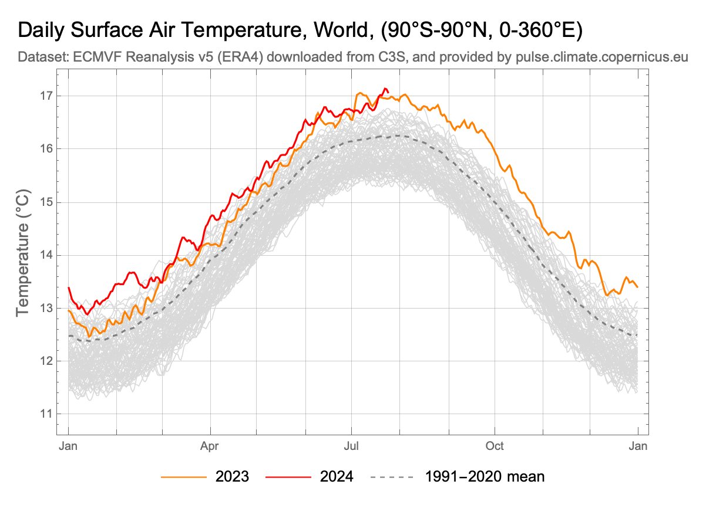
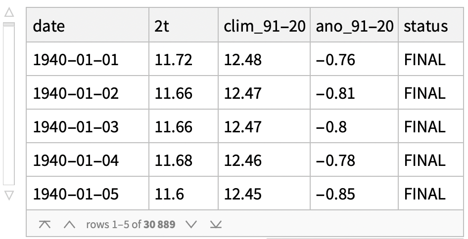
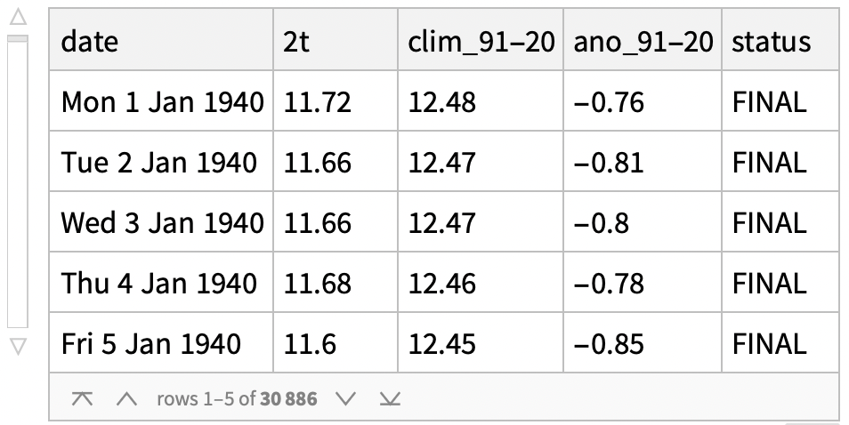
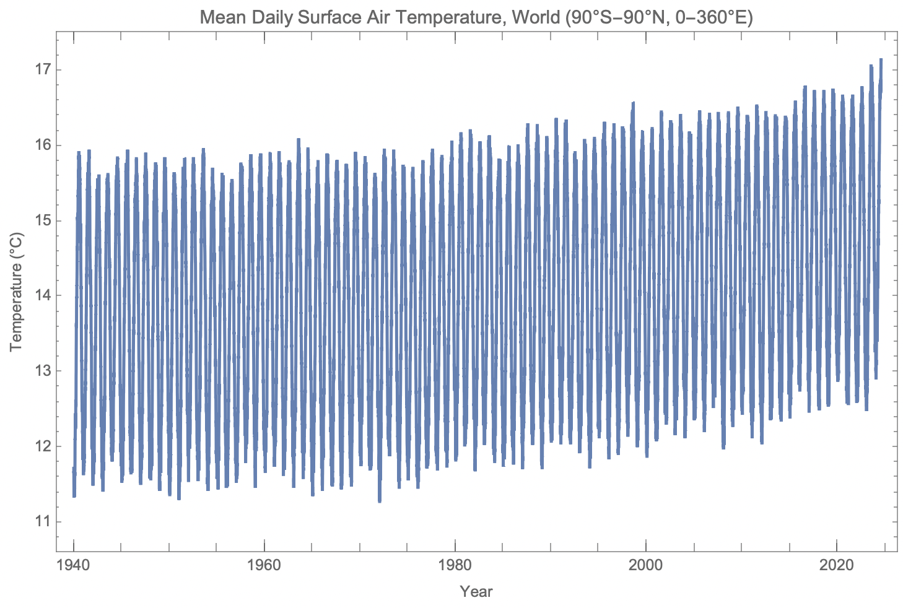
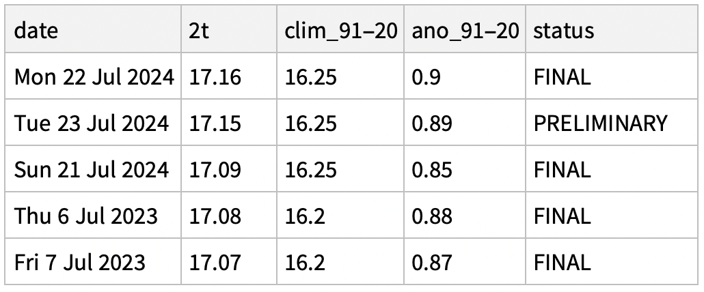
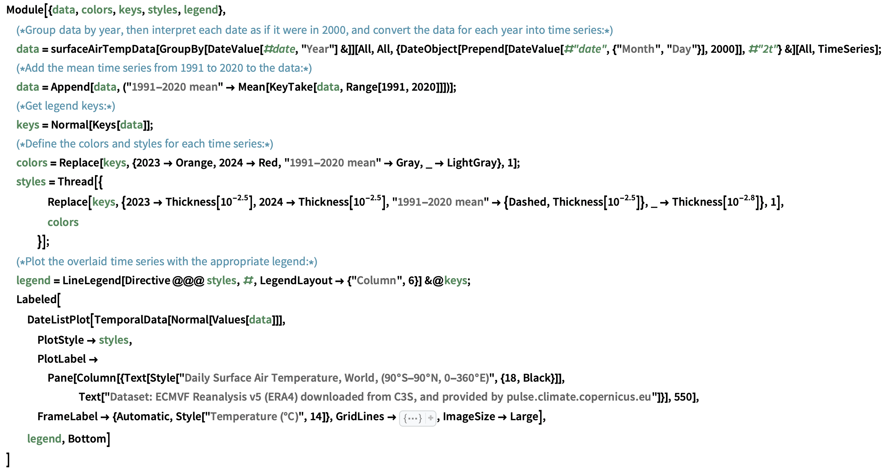
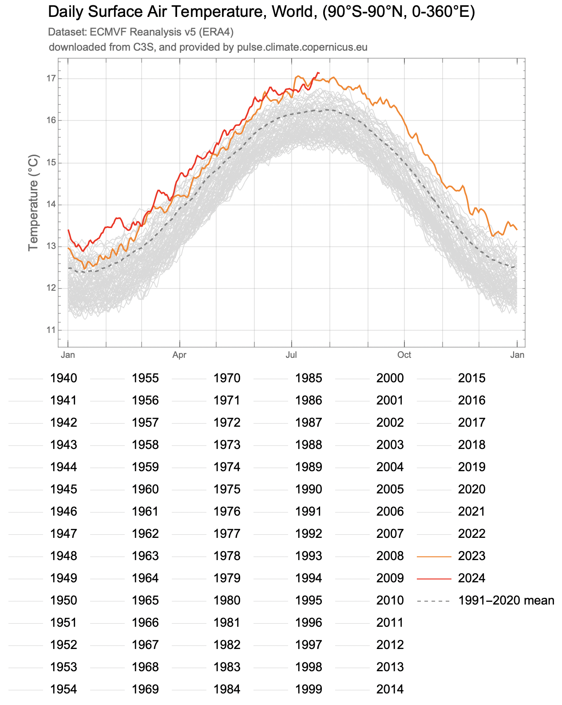
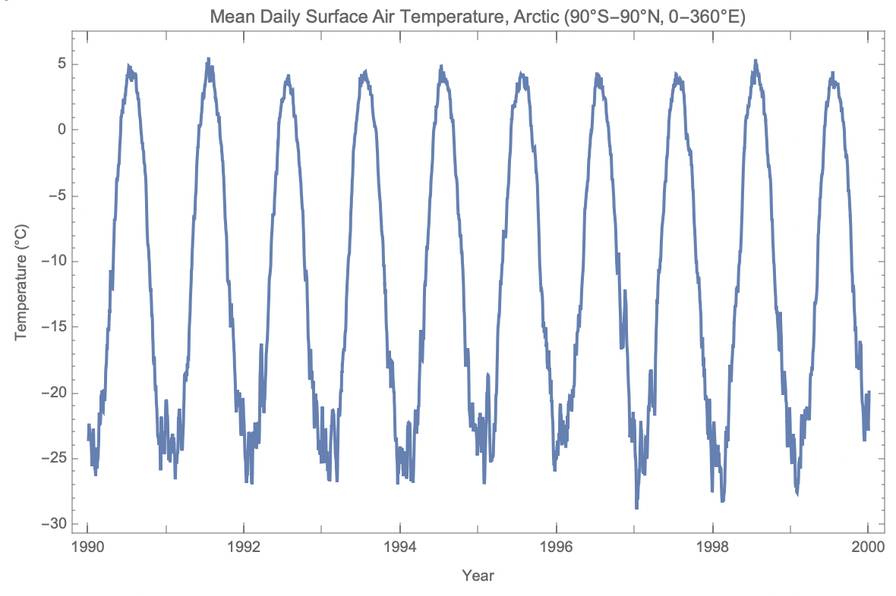
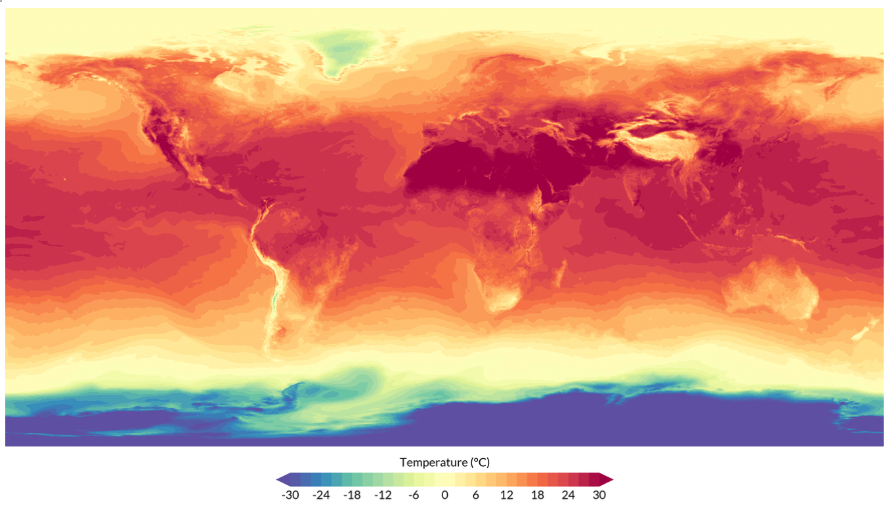
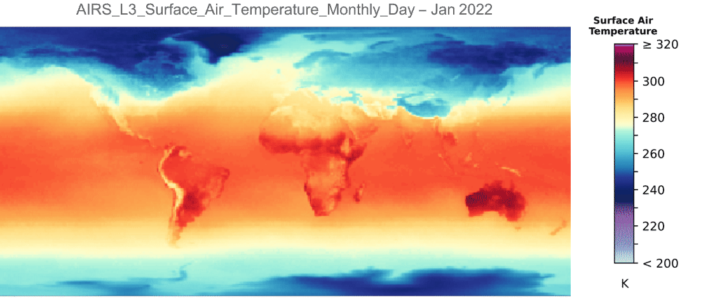

Earth's Hottest Day Ever Recorded - July 22, 2024 - Analysed and Visualised Through Climate Data

July 22, 2024 was the hottest day in recorded history, according to provisional data from the European climate service.
Note: This post was originally a short technical article I shared on the Wolfram Community forum. For an interactive experience with live demonstrations or to download this text and source code as a Wolfram Notebook, please visit the original post here.
Introduction
On July 24 2024, the Associated Press reported that July 22, 2024 broke the record for the hottest day ever recorded on earth, according to provisional data from the European climate service, Copernicus.
- Copernicus’ Climate Pulse: https://pulse.climate.copernicus.eu/ (near real time, typically 2 days behind)
- The University of Maine’s Climate Reanalyzer: https://climatereanalyzer.org/clim/t2_daily/?dm_id=world (a few more days delay)
Getting Global Mean Surface Temperature Data
Importing and Preprocessing Data from Climate Pulse:
Climate Pulse conveniently provides a link to download a table of global surface air temperature data from 1940 to the latest data available. Let’s import these data:

Neat! The columns key (dropped from the .csv table during the import) defines the columns as:
# Columns:# 2t: Daily mean absolute temperature based on hourly values from 00 to 23 UTC# clim_91-20: Daily climatology for 1991-2020# ano_91-20: Daily anomaly relative to the 1991-2020 daily climatology# status: Preliminary or final# Units: deg. C# Last updated: 25 Jul 2024
To construct time series from these data, it'll help to convert the values from the date column into Wolfram Language date objects:

Constructing and Plotting Time Series from the Data:
Now that we have the data, we can get a time series of daily mean absolute temperatures like so:
Plotting it is as easy as:

Verifying the Claims Made by the AP & Others:
Based on these data, was the hottest day on record really last Monday? Let's confirm:
What were the top 5 hottest recorded days since 1940?

Note that the top four hottest days on record were this month.
Reproducing the Famous Global Mean Surface Temperature Multi-Year Overlay Plot
With the data we have collected, we can now reproduce the now famous year over year plot of global mean surface temperatures from Climate Pulse.


Getting These Data for Specific Time Ranges and Regions from Climate Reanalyzer
It would be helpful to have a function that automates the process of importing these data for different available regions and time ranges.
This task is quite straightforward using data from Climate Reanalyzer.
Define a function to import time series from Climate Reanalyzer:
The function supports importing data from six regions, specified with the area parameter:
- "World" ---> The whole world, 90°S-90°N, 0-360°E
- "NH" ---> The northern hemisphere, 0-90°N, 0-360°E
- "SH" ---> The southern hemisphere, 0-90°S, 0-360°E
- "Arctic" ---> 66.5-90°N, 0-360°E
- "Antarctic" ---> 66.5-90°S, 0-360°E
- "Tropics" ---> 23.5°S-23.5°N, 0-360°E
And takes an optional second argument specifying the start and end date for the requested data range in a list (from January 1st 1940 to seven days ago).
Consider the following examples:
Request and plot the time series of daily surface temperatures in the Arctic from 1990 to 2000:

Map Animations:
Climate Pulse hosts recent raster maps of global surface temperatures. Here is the one corresponding to last Monday:

I'd like to take a moment to highlight my RemoteSensing paclet, which presently provides a WL interface to NASA's GIBS and AppEEARS APIs for remote sensing data retrieval. While my paclet does not yet support access to Copernicus ERA5 data (look out for future releases), GIBS and AppEEARS both provide access to similar data products, which we can import and work with directly in the Wolfram Language.
Please feel free to consult the paclet documentation here: https://resources.wolframcloud.com/PacletRepository/resources/PhileasDazeleyGaist/RemoteSensing/
To install the paclet, run the following code:
PacletInstall["PhileasDazeleyGaist/RemoteSensing"]
Load the paclet:
Using GIBSData, list global surface air temperature products:
Animate a map using one of these products:

Conclusion
In this article, we've explored how one can readily access and analyse global climate data using the Wolfram Language. We've shown how one can pull daily global mean surface air temperature data from specific geographical ranges and plot the data over time, as well as how to import recent raster maps of global surface temperatures from Copernicus' Climate Pulse. We've also highlighted the RemoteSensing paclet, a powerful tool that can interface with NASA's GIBS and AppEEARS APIs for convenient remote sensing data retrieval.
With these functionalities, researchers in climate science and related fields are better equipped to analyse and interpret vast amounts of climate data right from within the Wolfram Language.